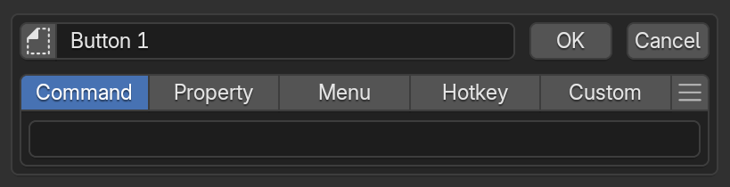

Common Editor Elements¶
In PME, select an item in the list, then edit its settings and contents on the right. The right-hand settings depend on the menu type. This page uses a practical Pie Menu configuration to explain shared controls.
Find controls in the overview¶
 1Editor controls and display modesSwitch Show List, Filter, Select Mode, Tree Mode, and grouping.
2List columnsChoose whether to show enabled state, name, tag, Keymap, and hotkey columns.
3Editor / SettingsSwitch between menu editing and settings for PME as a whole.
4Tools and display areaInteractive Panels, Debug Mode, and Maximize Preferences.
5Menu listSelect a menu to edit. When grouped by tag, one menu can appear in several groups.
6Add and manageUse + to choose a menu type. Import / Export controls are below the list.
7Selected menu settingsEdit the name, enabled state, advanced settings, and Keymap / Hotkey for supported types.
8Menu contentsThis Pie Menu has eight directional slots and two additional slots. Other menu types show branches or property settings here.
1Editor controls and display modesSwitch Show List, Filter, Select Mode, Tree Mode, and grouping.
2List columnsChoose whether to show enabled state, name, tag, Keymap, and hotkey columns.
3Editor / SettingsSwitch between menu editing and settings for PME as a whole.
4Tools and display areaInteractive Panels, Debug Mode, and Maximize Preferences.
5Menu listSelect a menu to edit. When grouped by tag, one menu can appear in several groups.
6Add and manageUse + to choose a menu type. Import / Export controls are below the list.
7Selected menu settingsEdit the name, enabled state, advanced settings, and Keymap / Hotkey for supported types.
8Menu contentsThis Pie Menu has eight directional slots and two additional slots. Other menu types show branches or property settings here.
Editor features and display modes: toggle the list, filters, selection mode, and tree view.
List columns: choose which columns appear in the list.
Editor / Settings: switch between menu editing and PME-wide settings.
Tools and display area: toggle Interactive Panels, Debug Mode, and Maximize Preferences.
Menu list: choose a menu to edit.
Add and manage menus: add, duplicate, import, and export menus.
Selected menu settings: edit its name, invocation, and advanced settings.
Menu contents: edit slots, branches, or other type-specific content.
Four groups in the top bar¶
From left to right, the top bar has four groups of controls. The selected menu’s name, enabled state, and advanced settings are in the row below.
1. Editor features and display modes¶
The leftmost group switches editor features and display modes.
Control |
Role |
|---|---|
Show List (three lines) |
Shows or hides the menu list. Turn it off to widen the selected menu’s editor; turn it on to select another menu |
Filter (funnel) |
Enables or disables list filtering. Check filters before concluding that a missing menu was deleted |
Select Mode (arrow) |
Selects several menus for bulk actions, distinct from choosing one menu to edit |
Tree Mode (tree) |
Displays menu relationships as a tree |
Group by (star and downward arrow in the image) |
Groups Tree Mode by None / Keymap / Type / Tag / Key. The icon reflects the selected choice |
Turning Show List off also hides the remaining controls in this group and the List columns group.
2. List columns¶
The five controls from the checkbox through F choose which information appears in the menu list.
Button |
List information |
|---|---|
Checkbox |
Each menu’s enabled state |
Ab |
Menu name |
Star |
Tags |
Mouse |
Keymap name |
F |
Hotkey |
Turning off the top-bar checkbox does not disable menus. Use the checkboxes on list rows or in the selected menu settings to change enabled state. Name and hotkey cannot both be hidden. Turning off the second while the first is hidden automatically shows the first again.
3. Editor / Settings¶
The large central control selects the working page. Editor edits menu settings and contents; Settings changes PME-wide options. For example, Expand Slot Tools, which exposes slot action buttons, is under Settings > General.
4. Tools and display area¶
The three controls on the right provide:
Control |
Role |
|---|---|
Interactive Panels (panel) |
Adds PME editing buttons to Blender panels and other UI. See Interactive Panels |
Debug Mode (Python) |
Toggles Blender’s |
Maximize Preferences (expand) |
Gives PME more space inside Preferences |
Show List controls the list within PME; Maximize Preferences controls how much of Preferences PME occupies. Neither is Blender’s area-maximization command.
Hotkey settings¶
For menu types supporting hotkeys, choose where and how to invoke them. Value-definition types such as Property do not have this section.

Keymap settings¶
Choose where the hotkey is used. Search for a Keymap in the input field to register it. Use the ＋ button on the right to register the hotkey in additional Keymaps.
Names in parentheses in the suggestions identify operations already assigned to the same key combination in that Keymap.
Blender organizes Keymaps by editor and mode, with a hierarchy between them. See Choosing a Keymap for details.
Hotkey Mode¶
Use the leftmost button to choose which action triggers the menu.
Mode |
Trigger |
|---|---|
Press |
Press the key |
Hold |
Hold the key |
Click Drag |
Move the mouse while holding the key |
Double Click |
Press the key twice in succession |
Key Chords |
Press the trigger key, then the configured Chord key |
Available modes depend on the menu type. Key Chords adds an input field for the second key.
Enable Settings > Hotkeys > Experimental Modes to also use Click (Experimental) and Click Drag (Experimental). These use Blender’s native click and drag events. They can conflict with existing assignments or fail to trigger as expected, so use them with an understanding of Keymaps and event handling. See Experimental Modes.
Key and modifiers¶
Set the trigger key in the upper row and choose its modifiers below. The image shows Shift + C.
Item |
Setting |
|---|---|
Key |
Click the input field, then press the key to assign |
Ctrl / Shift / Alt / OSKey |
Modifiers held with the trigger key. You can combine several |
Any |
Responds to the trigger key regardless of the Ctrl / Shift / Alt / OSKey state |
Mouse buttons can also act as modifiers, such as LMB + Tab, RMB + Tab, or MMB + Tab. See the mouse and hotkey videos for examples.
Related pages
Choosing a Keymap — Keymap hierarchy and how PME hotkeys are resolved
Checking Keymap Duplicates — investigate conflicts with existing hotkeys
Slot list¶
A slot is one item in a menu. Each Pie Menu direction or Pop-up Dialog button, for example, is a slot.
Slot arrangement has different meanings in different editors.
Fixed count: Pie Menu has ten slots (eight directions plus top and bottom); Sticky Key has two (On Press and On Release).
Variable count: Pop-up Dialog, Regular Menu, Stack Key, Macro Operator, and Modal Operator.
Meaningful order: Macro Operator runs slots in order. Modal Operator mixes action slots with event slots such as invocation, confirmation, and cancellation.
See each editor’s page for its arrangement and behavior.
Ordinary slots, such as Pie Menu slots, provide the following controls. Available controls vary by type.
Edit Slot — opens the Slot Editor to configure its contents.
Icon — chooses the displayed icon.
Display name — sets the slot label.
Advanced settings — additional options for the slot.
Expand Slot Tools¶
Enable Settings > General > Expand Slot Tools to expose the actions from each slot’s rightmost menu as directly clickable icons. This changes the editor display, not slot contents or execution.
For Pie Menu, the controls are Edit Slot / Copy / Move Slot / Enabled or Disabled / Clear; Paste also appears after copying a slot. Move Slot exchanges contents between fixed pie positions; Clear empties a position. Available actions depend on editor type and slot state.
See the Pie Menu interface for the expanded view. Turn it off to group the actions back into each slot’s rightmost menu.
Slot Editor¶
Click Edit Slot to open the Slot Editor. Set the name and other shared options at the top, then choose a slot type through its tab. See each editor’s page for specialized fields such as callbacks and conditions.
{kind=link}

Slot types¶
There are five slot types, defining what the slot does. Only types supported by the current editor appear as tabs. Some editors have specialized inputs; check their individual pages for supported types.
The tabs below describe each type.
Sets the Python code evaluated when the item is executed. When calling an operator, use one that supports the current editor, mode, and selection.
# Add a cube in the 3D Viewport's Object Mode
bpy.ops.mesh.primitive_cube_add()
Writing commands
The input limit is 1,024 UTF-8 bytes. Text containing multibyte characters reaches the limit sooner than 1,024 characters.
Separate short simple statements with ;; do not mechanically flatten indented blocks into one line.
See Code Input and Execution for checking length and moving code into an external script.
Global variables
Examples of available globals:
C: the context PME provides to scriptsO: bpy.ops (Blender operators)E: event information
See Scripting Reference for details.
Specify an object property path to display it as a widget.
For example, bpy.context.object.location displays and edits the object’s location.
Tool settings referenced with tool_props() appear only when available in the target editor, mode, and tool.
Otherwise they are hidden. Use the Custom tab to specify your own display conditions or alternative content.
See the API reference for the function’s arguments.
Advanced property operations
Use Property Editor when you need indexing or more complex property operations.
When clicked, calls another menu item created in PME. Examples:
Display a Popup Dialog with
Expand Popup DialogDisplay a Regular Menu with
Open on Mouse OverRun a Macro Operator
When clicked, finds and executes the operator assigned to the specified Blender hotkey.
For example, use Blender’s standard G for Move or R for Rotate.
Sets Python code evaluated when the UI is drawn.
L is the layout object; use Blender’s layout API to build the UI.
This code also runs on redraw. Place buttons for actions such as adding or removing objects,
rather than performing those actions directly while drawing.
# Display a label inside a box
L.box().label(text="Add Mesh")
# Arrange several buttons vertically
col = L.column(); col.operator("mesh.primitive_cube_add", text="Cube"); col.operator("mesh.primitive_uv_sphere_add", text="Sphere")
These are two independent examples. To place several UI elements in one Pie Menu slot, wrap them in a single column or box as in the second example. Adding multiple elements directly to the pie layout can shift subsequent slots to different directions.
The input limit is 1,024 UTF-8 bytes. See Code Input and Execution for length limits, multiline code, and external scripts.
Add a slot preset¶

Use the rightmost hamburger menu () to add one of the supplied slot functions.
Advanced settings¶
Open these with the selected menu’s gear button. Available options depend on the type. Description sets tooltip text; Poll sets availability. Type-specific options follow, such as Pie Menu Radius or Stack Key Remember Slot / Advance On.
Sets the text shown in a menu or slot’s tooltip.
Enter plain text, or enable the script toggle on the right to enter
Python code that returns the description with return.
return f"Active: {C.active_object.name if C.active_object else '(none)'}"
This example displays the active object’s name, or (none) when there is no active object.
Returning a description from Python
returnis required. A string expression alone does not return a description.The code runs when a description is requested, independently of the Command executed when an item is clicked.
Use it to read the current state. Put operations that add or remove objects, change settings, or otherwise modify data in Command.
Returning
None, or an evaluation failure, falls back to the default tooltip. Errors are reported in the console.
In a plain-text description, \n inserts a line break in the tooltip.
If a menu call has no description, the called menu’s name is displayed.
- Poll:
Uses Python to determine whether this menu can run in the current Blender context. A
Trueresult allows the menu to run;Falseskips it when called through a hotkey or UI.ao = C.active_object; return ao and ao.type == 'MESH'
Poll is checked for hotkey calls, HOLD / TWEAK / CHORD, script calls such as
open_menu()/pme.invoke_pm(), editor previews, Popup Dialog and regular menu drawing, and calls from Macro / Modal / Sticky / Floating Panel. This prevents another invocation route from running a menu that is unavailable in the current context.The button on the right opens Poll helpers for common conditions, inserting an empty Poll, and Cut / Copy / Paste. See Poll Method for writing conditions.
See each editor’s page for its specific options.
Editor-specific features¶
The following belong to individual editors, rather than shared controls, and are covered on their respective pages:
Pie Menu Radius / Threshold / Confirm Threshold / Confirm on Release.
Pop-up Dialog layout (rows, columns, subrows), Pie / Dialog / Popup modes, fixed columns, and alignment.
Modal Operator On Invoke / On Confirm / On Cancel / On Update slots, Confirm on Release, Block UI, and Lock.
Macro Operator submenu references (nested Sticky Key / Macro / Modal) and diagnostics.
Stack Key Remember Slot / Advance On (Every Press / Quick Repeat) / Repeat Timeout / Undo Previous Command.
Sticky Key On Press / On Release pair and Save and Restore Previous Value generator.
Property Editor types, storage, Property ID, Getter / Setter.
Property Stack conditions and state; Context Router branches and fallback behavior.